1. Pressure Fundamentals — Quick Reference
Definition, Units & Pressure Terminology| Concept | Definition / Explanation | Formula / Unit |
|---|---|---|
| Pressure | The normal force acting per unit area. | \( P = \dfrac{F}{A} \) |
| Force (Fn) | The normal (perpendicular) force acting on the surface. | N |
| Area (A) | The surface area over which the force acts. | m² |
| SI Unit of Pressure | The pascal (Pa). | \( 1\ \text{Pa} = 1\ \text{N/m}^2 \) |
| Bar | Common non-SI pressure unit. | \( 1\ \text{bar} = 10^5\ \text{Pa} = 14.5\ \text{psi} \) |
| Standard Atmosphere | Standard atmospheric pressure, expressed in several units. | \( 1\ \text{atm} = 101325\ \text{Pa} = 101.325\ \text{kPa} = 1.01325\ \text{bar} = 760\ \text{mmHg} = 760\ \text{torr} \) |
| Atmospheric Pressure | Pressure exerted by the surrounding atmosphere (ambient pressure). | \( P_{atm} \approx 1\ \text{atm} \) (standard value) |
| Absolute Pressure | Pressure measured relative to absolute zero (complete vacuum). | \( P_{abs} = P_{atm} + P_{gauge} \) |
| Gauge Pressure | Pressure measured relative to atmospheric pressure. | \( P_{gauge} = P_{abs} - P_{atm} \) |
| Vacuum Pressure | Pressure below atmospheric pressure; vacuum = negative gauge pressure. | \( P_{vac} = -P_{gauge} = P_{atm} - P_{abs} \) |
| Differential Pressure | Pressure measured between two different ports. | \( \Delta P = P_1 - P_2 \) |
| STP | Standard Temperature and Pressure; usually 1 atm and 0 °C. | 1 atm, 0 °C (273.15 K) |
Keep the three references separate: absolute, gauge and vacuum pressure each use a different zero. Also, bar and atm are different units (1 atm = 1.01325 bar); do not round one into the other unless the question says so.

2. Solved Numerical Problems — AI-Generated Applications
Practice applications of the formulas presented in this lectureNote: The following solved examples are AI-generated applications created solely to demonstrate how to apply the formulas and laws presented in this lecture. These examples are not included in the professor's original lecture PDF and were not provided or explained by the professor.
Examples 1 and 2 are below. Examples 3 and 4 appear beside the topics they apply (inclined manometer, Pitot-static tube) and carry the same label.
Topic: Pressure Calculation & Area Effect
(This is an additional application of the lecture’s formula. It was not mentioned in the lecture or provided by the professor. View it only if you would like to see how to apply the formula.)
(a) Calculate the resulting pressure in kPa and bar.
(b) If the piston area is reduced to \( A_2 = 0.01 \text{ m}^2 \) under the same force, determine the new pressure and compare the two values.
Step-by-step solution
Relevant formula: \[ P = \frac{F}{A} \]Substitution and calculation: \[ P_1 = \frac{15{,}000\ \text{N}}{0.05\ \text{m}^2} = 300{,}000\ \text{Pa} = 300\ \text{kPa} \]
Relevant formula: \[ 1\ \text{bar} = 10^5\ \text{Pa} \]Substitution and calculation: \[ P_1 = \frac{300{,}000}{10^5} = 3.0\ \text{bar} \]
Relevant formula: \[ P = \frac{F}{A} \]Substitution and calculation: \[ P_2 = \frac{15{,}000\ \text{N}}{0.01\ \text{m}^2} = 1{,}500{,}000\ \text{Pa} = 1{,}500\ \text{kPa} = 15.0\ \text{bar} \]
Relevant formula: \[ P \propto \frac{1}{A}\ \ (F\ \text{constant}) \]Substitution and calculation: \[ \frac{P_2}{P_1} = \frac{A_1}{A_2} = \frac{0.05}{0.01} = 5 \]The area fell to one fifth at constant force, so the pressure is five times larger.
Topic: Pressure Terminology Conversions
(This is an additional application of the lecture’s formula. It was not mentioned in the lecture or provided by the professor. View it only if you would like to see how to apply the formula.)
(a) A pressure gauge attached to a boiler reads \( 3.2 \text{ bar} \). Find the absolute pressure inside the boiler in kPa.
(b) A vacuum chamber exhibits a vacuum pressure of \( 40 \text{ kPa} \). Determine the absolute pressure in the chamber in kPa.
Step-by-step solution
Relevant formula: \[ 1\ \text{atm} = 101.325\ \text{kPa} = 760\ \text{mmHg} \]Substitution and calculation: \[ P_{atm} = 750\ \text{mmHg} \times \frac{101.325\ \text{kPa}}{760\ \text{mmHg}} \approx 99.99\ \text{kPa} \approx 100\ \text{kPa} \](Rounded to 100 kPa for the next steps.)
Relevant formula: \[ 1\ \text{bar} = 10^5\ \text{Pa} = 100\ \text{kPa} \]Substitution and calculation: \[ P_g = 3.2\ \text{bar} = 3.2 \times 100 = 320\ \text{kPa} \]
Relevant formula: \[ P_{abs} = P_{atm} + P_g \]Substitution and calculation: \[ P_{abs} = 100 + 320 = 420\ \text{kPa} \]
Relevant formula: \[ P_{vac} = P_{atm} - P_{abs}\ \Rightarrow\ P_{abs} = P_{atm} - P_{vac} \]Substitution and calculation: \[ P_{abs} = 100 - 40 = 60\ \text{kPa} \]
3. طرق الاستشعار الجاذبية (البارومتر والمانومتر)
Gravitational Sensing Methods: Hydrostatic Column Balancingتعتمد الطرق الجاذبية (Gravitational Methods) على مبدأ الهيدروستاتيكا: وزن عمود سائل متزن تحت تأثير عجلة الجاذبية الأرضية يولد ضغطاً يتناسب طردياً مع كثافة السائل والارتفاع الرأسي للعمود:
Where: \( \rho \) = Fluid density (\(\text{kg/m}^3\)), \( g \) = Gravitational acceleration (\(9.81 \text{ m/s}^2\)), \( h \) = Vertical column height (m).
3.1 البارومتر الزئبقي (Mercury Barometer)
"It is used to measure atmospheric pressure. The ambient pressure is used to predict short-term changes in the weather. Ambient pressure may also affect some experimental results."
اخترع العالم توريشيللي (Torricelli) البارومتر بملء أنبوبة زجاجية طويلة بالزئبق وقلبها في حوض مفتوح يحتوي على الزئبق. ينخفض الزئبق مستقراً عند ارتفاع \( h \) تاركاً فراغاً شبه تام في الأعلى يسمى فراغ توريشيللي (Torricellian Vacuum).
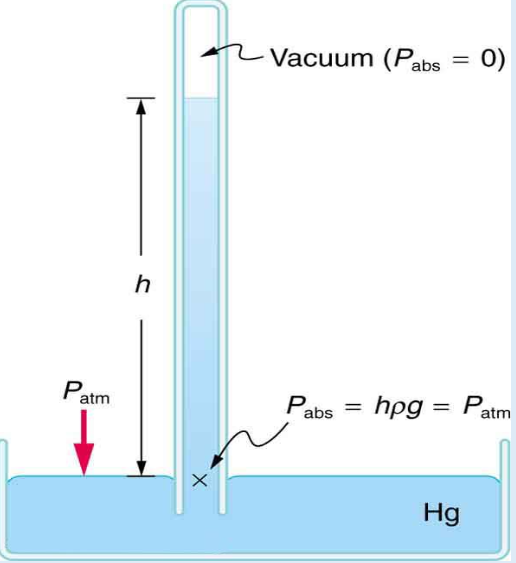
من المعادلة الهيدروستاتيكية: \[ h = \frac{P_{atm}}{\rho \cdot g} \] نلاحظ أن ارتفاع العمود يتناسب عكسياً مع كثافة السائل المستخدم. الزئبق معدن سائل ذو كثافة فائقة (\( \rho_{Hg} \approx 13,600 \text{ kg/m}^3 \))؛ لذا يحتاج فقط إلى عمود بارتفاع حوالي 760 mm (76 cm) لموازنة الضغط الجوي. بينما لو استخدمنا الماء (\( \rho_{w} = 1000 \text{ kg/m}^3 \))، فسنحتاج إلى أنبوبة بارتفاع يتجاوز 10.3 متر، وهو أمر غير عملي إطلاقاً في المختبرات!
3.2 المانومترات (Manometers)
"It is used to measure pressure differential. The manometric fluid may be mercury, water or oil. The head (h) has to be carefully measured."
يعتمد المانومتر على حقيقة أن الضغط متساوٍ عند جميع النقاط الواقعة على نفس المستوى الأفقي داخل سائل ساكن ومتصل. في حالة مانومتر تفاضلي يقيس فرق الضغط بين نقطتين عبر أنبوبة تحتوي سائلين، تكون المعادلة العامة:
Where: \( \rho_m \) = Density of manometric fluid, \( \rho_f \) = Density of flowing line fluid, \( h \) = Vertical level difference.

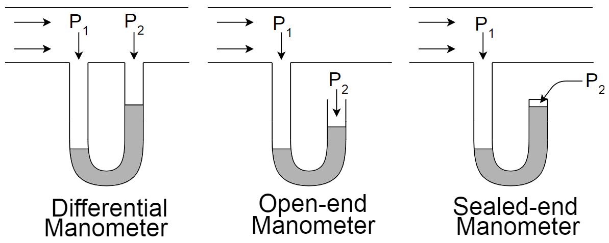
مصادر الخطأ في قياسات المانومتر (Errors in Manometer Measurements)
تعتمد دقة المانومتر بشكل صارم على قياس الارتفاع \( h \) والخواص الفيزيائية، ومن أهم مصادر الخطأ:
- Parallax Error (خطأ زاوية النظر): خطأ يحدث عند قراءة منسوب السائل في الأنبوبة إذا لم تكن عين الراصد متعامدة تماماً على مستوى قعر التقعر السطحي (Meniscus).
- Tubes Not Perfectly Vertical (عدم تعامد الأنبوبة): معادلة الضغط تعتمد على الارتفاع الرأسي الصافي؛ فإذا كانت الأنبوبة مائلة بدون قصد، فإن القراءة المقاسة على طول الأنبوبة تكون أكبر من الارتفاع الحقيقي، مما يسبب خطأ منتظماً (Systematic Error).
- Density Changes with Temperature (\( \rho = f(T) \)): تتغير كثافة السوائل المانومترية مع الحرارة، وإهمال تأثير الحرارة واستخدام كثافة اسمية غير دقيقة يدخل انحيازاً منتظماً في النتيجة.
- Random vs. Systematic Errors: الخطأ العشوائي ناتج عن اهتزاز السطح أو دقة العين ويمكن تقليله بتكرار القراءات؛ بينما الخطأ المنتظم (مثل ميل الأنبوبة أو خطأ التدريج) لا يزول بالتكرار بل يتطلب إعادة ضبط ومعايرة الجهاز.
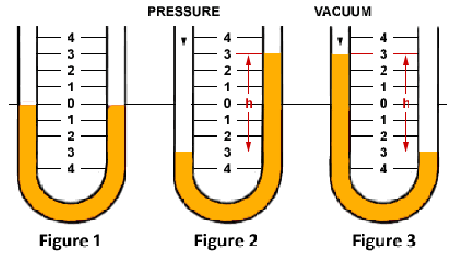
Two level values have to be read to evaluate h.
اختيار السائل والمانومتر المائل (Inclined Manometer)
عند قياس فروق ضغط صغيرة جداً، لو استخدمنا الزئبق فسيكون الارتفاع \( h \) بالغ الصغر وصعب القراءة بالعين المجردة. القاعدة تنص على:
For small pressure differences, use a manometric fluid of low density. But h is still small.
\[ h = \frac{\Delta p}{\rho \cdot g} \implies h \propto \frac{1}{\rho} \] لقياس فروق الضغط الصغيرة (\( \text{Small } \Delta P \))، نختار سائلاً منخفض الكثافة (مثل الزيت الخفيف أو الكحول الملون) لزيادة ارتفاع العمود وتسهيل الملاحظة.

ولكن إذا كان فرق الضغط صغيراً جداً لدرجة لا تكفي معها السوائل الخفيفة، نلجأ إلى المانومتر المائل (Inclined Manometer):
"Used to increase sensitivity" — يتم إمالة أنبوبة القراءة بزاوية \( \theta \) بالنسبة للأفقي. عندئذ تتحرك جبهة السائل مسافة مائلة طويلة \( L \) على طول التدريج مقابل ارتفاع رأسي ضئيل \( h \):
⚠️ "Take care of the angle — Systematic Error": يجب ضبط زاوية الميل \( \theta \) بمنتهى الدقة؛ لأن أي خطأ في الزاوية ينتقل مباشرة إلى حساب فرق الضغط.
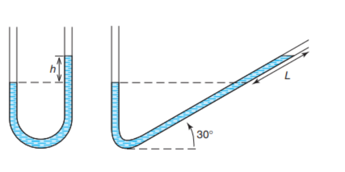
مانومتر الخزان (Well-Type Manometer)
في مانومتر U-Tube العادي، يتغير مستوى السائل في كلا الطرفين، مما يلزم المراقب بقراءة منسوبين منفصلين (\( h_1 \) و \( h_2 \)) وحساب الفرق بينهما: \( h = |h_1 - h_2| \)، وهذا يضاعف احتمال حدوث أخطاء القراءة.
تم استبدال أحد الطرفين بخزان عريض (Well / Reservoir) مساحة مقطعه كبيرة جداً مقارنة بمساحة مقطع أنبوبة القياس. عندما يرتفع السائل في الأنبوبة، يكون انخفاض السائل في الخزان ضئيلاً جداً ويمكن إهماله عملياً، أو يتم تعويضه مسبقاً في تدريج الجهاز بحيث يتم أخذ القراءة مباشرة من أنبوبة واحدة فقط!
"Take care of well diameter and indicator angle (90°)"


مميزات وعيوب المانومترات (Advantages & Limitations)
✅ المميزات (Advantages)
- Simple: تصميم ميكانيكي هيدروستاتيكي بسيط وخالٍ من التعقيد.
- Inexpensive: تكلفة منخفضة جداً مقارنة بالحساسات الإلكترونية.
- Can be highly sensitive: حساسية فائقة عند استخدام الأنبوبة المائلة.
- Standard: يعتبر مرجعاً فيزيائياً مباشراً لا يحتاج لمعايرات معقدة.
❌ العيوب والقيود (Limitations)
- Poor Dynamic Response: استجابة بطيئة للتغيرات السريعة بسبب قصور السائل الذاتي.
- No Remote Sensing: لا يوفر إشارة كهربائية للمراقبة أو التحكم عن بعد.
- Limited Pressure Range: نطاق محدود عملياً لا يتجاوز عادةً 7 bar.
- Glass Fragility & Vapors: قابلية كسر الأنابيب الزجاجية وسمية أبخرة الزئبق.
Topic: Inclined Manometer Calculation
(This is an additional application of the lecture’s formula. It was not mentioned in the lecture or provided by the professor. View it only if you would like to see how to apply the formula.)
Step-by-step solution
Relevant formula: \[ h = L \sin\theta \]Substitution and calculation: \[ h = 120\ \text{mm} \times \sin 30^\circ = 120 \times 0.5 = 60\ \text{mm} = 0.06\ \text{m} \]
Relevant formula: \[ \Delta p = (\rho_m - \rho_f)\, g\, h \]Substitution and calculation: \[ \Delta p = (850 - 0) \times 9.81 \times 0.06 \approx 500.31\ \text{Pa} \]
Relevant formula: \[ \frac{L}{h} = \frac{1}{\sin\theta} \]Substitution and calculation: \[ \frac{L}{h} = \frac{1}{\sin 30^\circ} = 2 \]The liquid moves 120 mm along the scale for a 60 mm vertical head, so the inclination doubles the apparent sensitivity.
4. جهاز اختبار الأوزان الميتة (Dead Weight Tester)
Primary Standard for Static Pressure Gauge Calibration"The Dead Weight Tester is a primary calibration apparatus based on Pascal's Law. It is used for static calibrations only, and can generate and measure extremely high pressures with exceptional accuracy."
يقوم مبدأ عمل الـ Dead Weight Tester على توليد ضغط مرجعي عالي الدقة من خلال وضع كتل دقيقة معلومة الوزن (Known Masses) فوق مكبس رأسي ذي مساحة مقطع عرضي فعالة معلومة بدقة (Piston Area A):
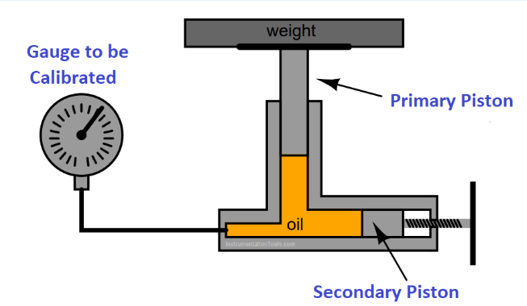
Where: \( p \) = Generated reference pressure (Pa), \( m \) = Total mass placed on the piston (kg), \( g \) = Local gravitational acceleration (\(\text{m/s}^2\)), \( A \) = Effective cross-sectional area of piston (\(\text{m}^2\)).
الهدف هو الحصول على ضغط مرجعي مستقل تماماً، لا يعتمد على أي مؤشر قياس آخر. الخطوات:
- يتم توصيل عداد الضغط المراد معايرته بالمنظومة الهيدروليكية للجهاز.
- توضع كتلة دقيقة معلومة \( m \) فوق صينية المكبس.
- يتم تدوير المكبس ببطء باليد لتقليل الاحتكاك الاستاتيكي مع الأسطوانة.
- يُحسب الضغط الحقيقي المطبق: \( p_{ref} = \frac{mg}{A} \).
- تُسجل قراءة العداد وتُقارن بالقيمة المحسوبة لتحديد مقدار الخطأ وإعداد جدول ومنحنى المعايرة.
قيود وعيوب الـ Dead Weight Tester (Slide 17 Limitations)
- Friction between Piston and Cylinder: احتكاك المكبس بالأسطوانة يقلل من دقة نقل القوة، وللتغلب على ذلك يتم تدوير المكبس أثناء أخذ القراءة لتحويل الاحتكاك إلى احتكاك حركي دوراني.
- Poor Dynamic Response: جهاز مخصص للمعايرة الاستاتيكية فقط (Static Calibrations Only)، ولا يمكن استخدامه لمتابعة الضغوط المتغيرة ديناميكياً مع الزمن.
- Affected by Uncertainty in Gravitational Constant \( g \): يعتمد الضغط على عجلة الجاذبية المحلية؛ وأي تفاوت جغرافي في قيمة \( g \) يؤثر في دقة الضغط المحسوب إذا لم يُصحح.
5. طرق الاستشعار الميكانيكية (العناصر المرنة)
Mechanical Sensing Methods: Bourdon Tube, Diaphragms & Bellowsتعتمد الأجهزة الميكانيكية على تشوه عنصر مرن (Elastic Element) تحت تأثير الضغط، وتحويل هذا التشوه إلى إزاحة ميكانيكية تحرك مؤشراً على تدريج دائري:
يجب أن يعمل العنصر دائماً داخل حد المرونة (Elastic Limit) لمادته. إذا تعرض الجهاز لضغط زائد يتجاوز حد المرونة، سيحدث تشوه لدن دائم (Plastic Deformation)، مما يفقد المؤشر صفر التدريج ويولد خطأً منتظماً ثابتاً (Systematic Error) قد يؤدي إلى تلف الجهاز نهائياً.
5.1 أنبوبة بوردون (Bourdon Tube)
"Contains an elastic element that deforms under pressure creating a displacement which is transformed to mechanical linkages and then displayed on a dial. Due to its mechanical nature, it's not useful in case of dynamic pressure measurements. Avoid excessive input pressures in order to avoid plastic deformations (Systematic Error)."
"To vary the sensitivity, different types may be used. Note that: sensitivity is always inversely proportional to the range."
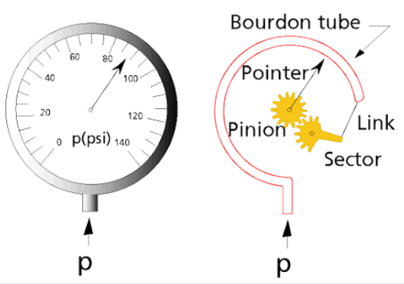
أنبوبة بوردون هي أنبوب معدني بيضاوي المقطع منحني على شكل حرف C (أو حلزوني/لولبي للنطاقات المختلفة). الطرف السفلي مثبت ومتصل بمدخل الضغط، بينما الطرف العلوي مغلق وحر الحركة. عند دخول الضغط، تحاول جدران الأنبوبة استعادة المقطع الدائري مما يؤدي إلى انفراج الانحناء وتحرك الطرف الحر للخارج. تنتقل هذه الإزاحة عبر رافعة ومسنن قطاعي (Sector & Pinion) لتحريك المؤشر.

5.2 الأغشية المرنة (Diaphragms)
الـ Diaphragm هو قرص معدني أو بوليمري مرن ورقيق، يثبت عند حوافه ويفصل بين غرفتي ضغط. عندما ينشأ فرق ضغط عبر الغشاء، ينحني مركزه بمقدار يتناسب مع فرق الضغط.
"All these types are suitable only for static pressure measurements."

5.3 المنفاخ المرن (Bellows)
الـ Bellows هو عنصر أسطواني رقيق الجدران يحتوي على طيات وتموجات متتابعة تشبه الأكورديون. تمنحه هذه الطيات قابلية كبيرة للتمدد والانكماش الطولي عند تعرضه للضغط الداخلي أو الخارجي، مما ينتج إزاحة ميكانيكية أكبر بكثير من الغشاء الرقيق.

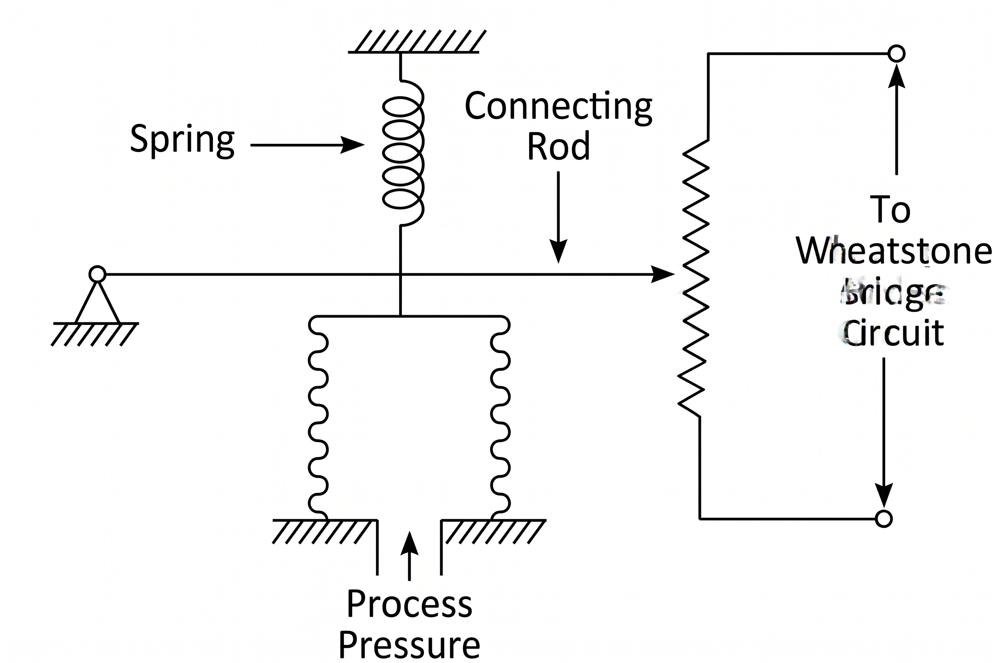
مقارنة عناصر الاستشعار الميكانيكية الثلاثة
| العنصر المرن | مبدأ العمل الفيزيائي | الاستخدام المعتاد | مقدار الإزاحة والحساسية | القيد الأساسي |
|---|---|---|---|---|
| Bourdon Tube | انفراج انحناء أنبوب بيضاوي | قياس الضغوط المتوسطة والعالية بالعدادات | إزاحة متوسطة (حساسية متوسطة) | للضغط الساكن فقط، يتأثر بالتشوه اللدن |
| Diaphragm | انحناء قرص غشائي رقيق | قياس فروق الضغط المنخفضة والغازات | إزاحة صغيرة جداً (حساسية عالية للضغوط المنخفضة) | محدودية حد المرونة وصعوبة تحمل الضغط الزائد |
| Bellows | تمدد وانكماش طيات أسطوانية | التحكم الصناعي وتشغيل المفاتيح والقواطع | إزاحة طولية كبيرة نسبياً | قصور ذاتي ميكانيكي واستجابة ديناميكية بطيئة |
6. أجهزة الاستشعار الكهربائية: نظرة عامة
Electrical Pressure Sensors: Molecular vs. Parametric Transducers"Pressure sensors provide an electric output that depends on the input pressure."
أوضح أستاذ المادة أن هناك تصنيفاً جوهرياً يقسم الحساسات الكهربائية إلى عائلتين رئيسيتين بناءً على مكان وطبيعة التغير الكهربائي الناشئ:
"The applied input pressure produces a change in a certain electric property of the sensor material itself."
الضغط يؤثر مباشرة على التركيب البلوري أو البنية الجزيئية لمادة الحساس نفسها (مثل توليد شحنة في الكوارتز، أو تغير المقاومة النوعية في أشباه الموصلات).

"The applied input pressure causes a change in a certain electric property of an electric circuit."
الضغط يحرك عنصراً ميكانيكياً ينتج إزاحة مادية، وهذه الإزاحة تغير أحد بارامترات الدائرة الكهربائية الخارجية (المقاومة \( R \)، الحث \( L \)، أو السعة \( C \)).
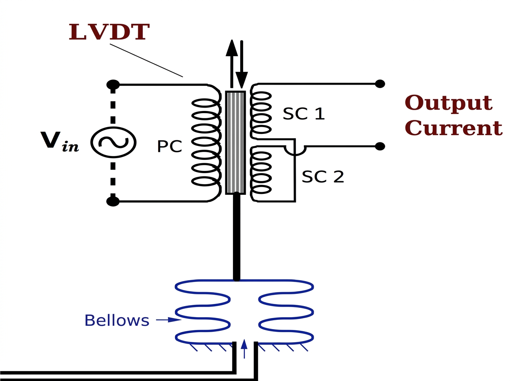
"Both molecular and parametric sensors produce an electric output which is proportional with the applied pressure. The molecular sensors are much more suitable in cases of dynamic pressure measurements."
السبب الفيزيائي: الحساسات الجزيئية لا تحتوي على أجزاء ميكانيكية ثقيلة تتحرك مسافات كبيرة؛ لذا فإن قصورها الذاتي مهمل وترددها الطبيعي عالي جداً، مما يجعلها مثالية للضغوط المتغيرة بسرعة فائقة والانفجارات والنبضات.
7. الحساسات الجزيئية (Piezoelectric & Piezoresistive)
Molecular Sensors: Charge Generation & Bulk Resistivity Change7.1 الحساس الكهروضغطي (Piezoelectric Sensor)
"Piezo-electric elements are bi-directional transducers capable of converting the pressure into an electric charge."
"Polarized crystalline structures like quartz generate a small electric charge (High O/P electric impedance) when a dynamic pressure is applied on them. (Amplifier is a must). The charge quantity is proportional to the applied pressure. The charge polarity depends on the force direction. Provide an output only if the applied pressure varies with time (Dynamic Pressure Measurements — frequent input)."

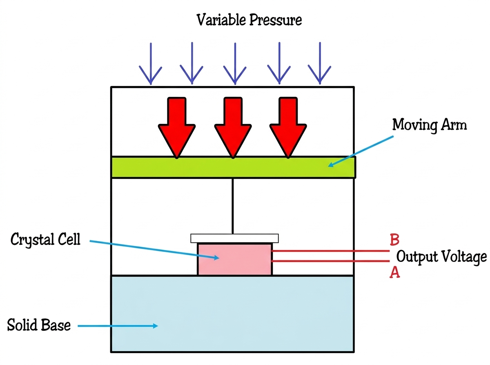
الـ Piezoelectric Effect هو التأثير الذي يحدث عندما نضغط على مادة بلورية غير متماثلة الشحنات (مثل بلورة الكوارتز Quartz Crystal). يؤدي الضغط إلى إزاحة مراكز الشحنات الموجبة والسالبة داخل الشبكة البلورية، فتتولد شحنات كهربائية (Electric Charge Q) على أسطح الأقطاب:
حيث \( d \) هو معامل الكهروانضغاطية. ونظراً لأن الشحنة صغيرة جداً والمقاومة الداخلية للبلورة هائلة (High Output Impedance)، فإنه يلزم حتماً استخدام مكبر إشارة (Charge Amplifier) لتفادي تسرب الشحنة.
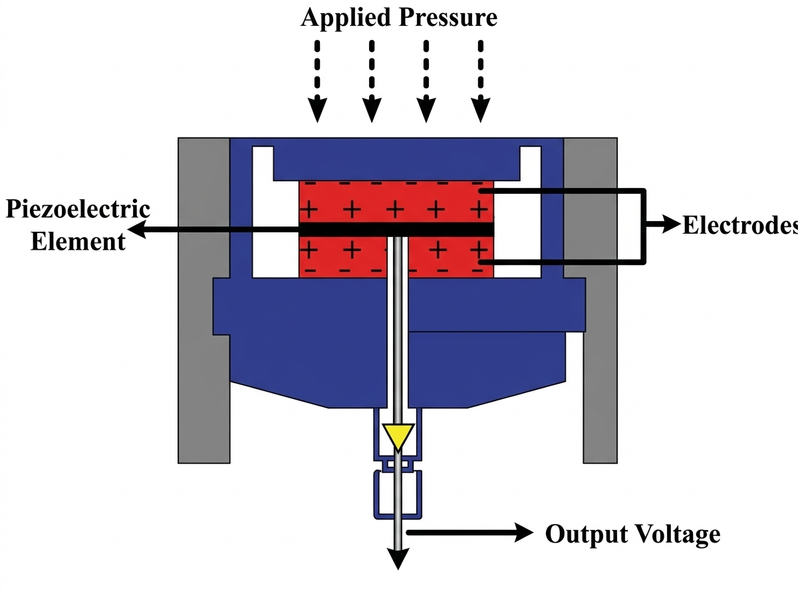
إذا كان الضغط ثابتاً ومستمراً، تتولد الشحنة في اللحظة الأولى فقط ثم تتسرب فوراً عبر مقاومة العزل ومقاومة جهاز القياس إلى الأرض، فيعود الخرج إلى الصفر رغم بقاء الضغط ثابتاً! لذلك يُستخدم حصرياً في القياسات الديناميكية (Dynamic Pressure Measurements) مثل قياس ضغط الانفجار داخل محركات الاحتراق وموجات الصدمة الهوائية.
7.2 الحساس المقاوم للضغط (Piezoresistive Sensor)
"Certain materials change their resistances with the applied pressure. The sensor is made part of Wheatstone Bridge. The output is signal conditioned (amplified, filtered, converted into digital) and then displayed or recorded."
على عكس مقاييس الانفعال التقليدية (Strain Gauges) التي تعتمد على التغير الهندسي في الطول والمساحة، فإن المواد المقاومة للانضغاط (مثل السيليكون المطعّم) تتغير مقاومتها النوعية (Bulk Resistivity) نتيجة تغير طاقة حزم التوصيل عند تعرضها لإجهاد الضغط:
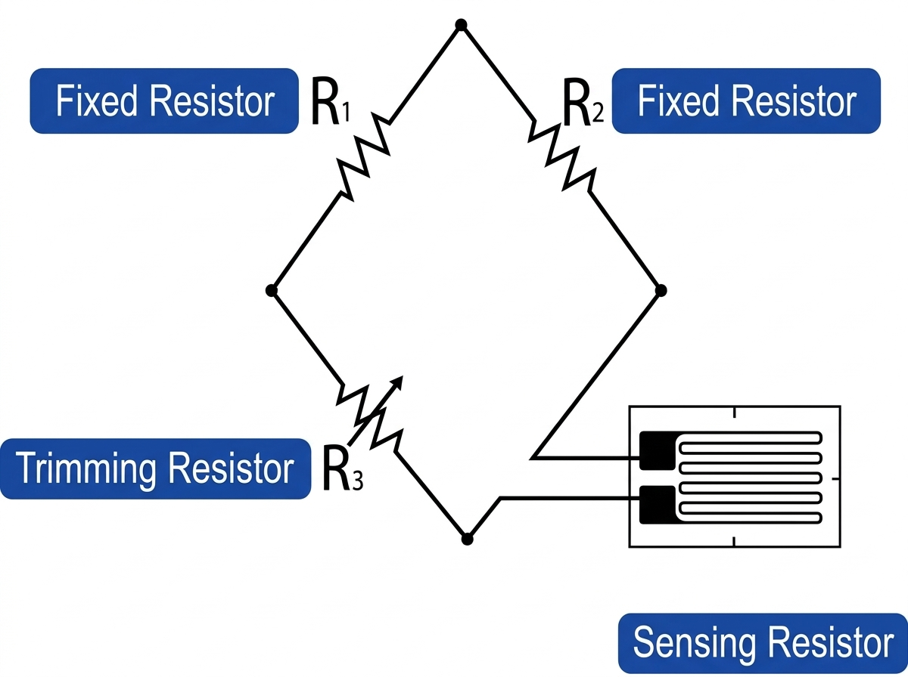
بما أن التغير هنا هو تغير في قيمة المقاومة الكهربائية (\( \Delta R \)) وليس شحنة متسربة، فإن التغير في جهد خرج قنطرة ويتستون يظل ثابتاً ومستقراً طالما ظل الضغط المطبق ثابتاً؛ لذا يمكن استخدامه بكفاءة تامة في قياس الضغط الثابت (Static) والضغط البطيء والديناميكي أيضاً.
مقارنة تفصيلية بين Piezoelectric و Piezoresistive
| وجه المقارنة | Piezoelectric Sensor | Piezoresistive Sensor |
|---|---|---|
| مبدأ العمل الأساسي | توليد شحنة كهربائية نتيجة الضغط | تغير قيمة المقاومة الكهربائية لمادة الحساس |
| الخاصية المتغيرة | Electric Charge (Q) | Resistance (R) |
| المادة المستخدمة | بلورات الكوارتز (Quartz) والسيراميك الكهروضغطي | أشباه الموصلات المطعمة والسيليكون |
| الدائرة الكهربائية الملحقة | مكبر شحنة ذو ممانعة دخل فائقة (Charge Amplifier) | قنطرة ويتستون (Wheatstone Bridge) + مكبر جهد |
| ملاءمة الضغط الثابت (Static) | ❌ غير مناسب إطلاقاً (تتسرب الشحنة بسرعة) | ✅ مناسب جداً ومستقر في قياس الضغط الثابت |
| ملاءمة الضغط الديناميكي (Dynamic) | ✅ ممتاز وفائق الحساسية للترددات العالية | يعتمد على استجابة الدائرة وتصميم الغشاء |
8. الحساسات البارامترية (Parametric Sensors)
Parametric Sensors: Resistive, Inductive (LVDT) & Capacitive Transducers"Provide a physical displacement that is connected to electric sensors which convert this displacement into an electrical output. All except diaphragms provide relatively large physical displacement."

تعتمد الحساسات البارامترية على مرحلتين من التحويل:
أوضح أستاذ المادة أن التصنيف الأساسي للحساسات البارامترية يجيب عن السؤال التالي: What is the electrical parameter that changes? والإجابة تنقسم إلى ثلاثة أنواع رئيسية:
8.1 محول المقاومة الكهربائية (Resistive Transducer)
تتصل الإزاحة الناتجة عن المنفاخ أو أنبوبة بوردون بزالق مقاومة متغيرة (Potentiometer) أو ذراع يغير المقاومة في قنطرة قياس:
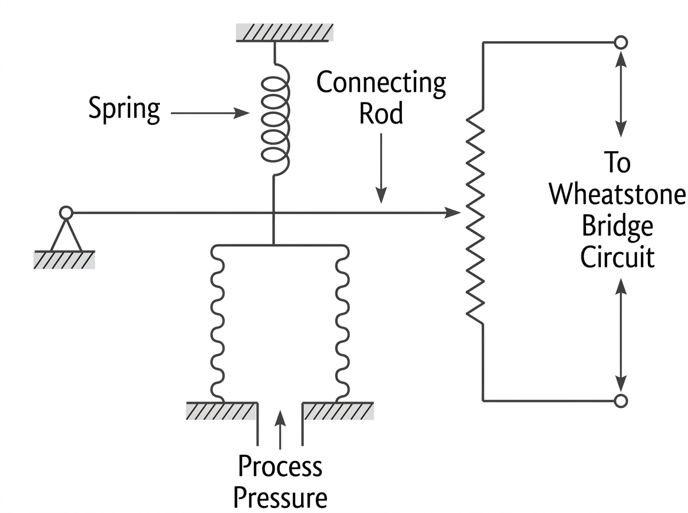
8.2 محول الحث الكهربائي والـ LVDT (Inductive Transducer)
يعتمد على تغير الحث الكهرومغناطيسي. أشهر أشكاله هو الـ LVDT وهو اختصار لـ: Linear Variable Differential Transformer. يحتوي المحول على ملف ابتدائي وملفين ثانويين وقلب حديدي متحرك (Magnetic Core). يتصل القلب بالمنفاخ أو الغشاء، وعند تغير الضغط يتحرك القلب ليغير الحث المتبادل بين الملفات، فينتج فرق جهد متناوب يتناسب مع موضع القلب:

8.3 محول السعة الكهربائية (Capacitive Transducer)
المكثف يتكون من لوحين موصلين تفصل بينهما مادة عازلة (Dielectric Material). تعتمد سعة المكثف على ثلاثة عوامل:
Where: \( A \) = Area of overlapping plates, \( d \) = Distance between plates, \( \varepsilon \) = Dielectric permittivity.
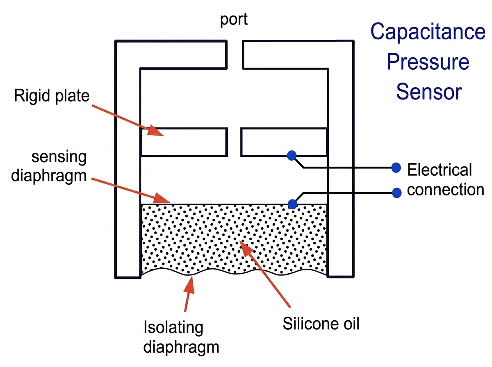
في حساس الضغط السعوي العملي، يتكون الحساس من لوحين:
- لوح ثابت (Fixed Plate) مثبت في جسم الحساس ومعزول كهربائياً.
- لوح مرن متحرك (Movable Plate / Diaphragm) معرض لضغط المائع.
عندما يؤثر الضغط، ينحني الغشاء مقترباً من اللوح الثابت، فتقل المسافة بين اللوحين (\( d \downarrow \)). ومن العلاقة العكسية \( C \propto \frac{1}{d} \)، ترتفع قيمة السعة الكهربائية (\( C \uparrow \)). يُدمج المكثف في دائرة مهتز (LC Oscillator) أو قنطرة ترددية لتحويل تغير السعة إلى تغير دقيق في التردد أو الجهد يتناسب طردياً مع الضغط.
مقارنة الأنواع الثلاثة للمحولات البارامترية
| نوع المحول (Transducer Type) | الخاصية المتغيرة | آلية التأثير بالإزاحة | الميزة الهندسية البارزة |
|---|---|---|---|
| Resistance Transducer | Resistance (R) | حركة زالق على سلك مقاومة أو انفعال شريحة | بساطة الدوائر وإمكانية التغذية بجهد مستمر (DC) |
| Inductance Transducer (LVDT) | Inductance (L) | حركة قلب مغناطيسي يغير الحث المتبادل | احتكاك ميكانيكي منعدم تقريباً وعمر تشغيلي طويل جداً |
| Capacitance Transducer | Capacitance (C) | تغير المسافة الفاصلة بين اللوحين \( d \) | حساسية فائقة واستجابة ممتازة لإزاحات ميكروية دقيقة |
9. قياس الضغط في مجالات الجريان (Flow Fields)
Static Pressure, Dynamic Pressure & Total (Stagnation) Pressure- Static Pressure (\( P_s \)): "Indicates the local fluid pressure when fluid is at rest or moving. Measured parallel to flow direction with no disturbance (Static Probe or wall tap)."
- Dynamic Pressure (\( P_d \)): "Pressure induced due to fluid motion and velocity: \( P_d = \frac{1}{2}\rho V^2 \)."
- Total / Stagnation Pressure (\( P_{tot} \)): "The summation of the static and dynamic pressures, measured by bringing fluid isentropically to rest at the stagnation point (Pitot Probe)."
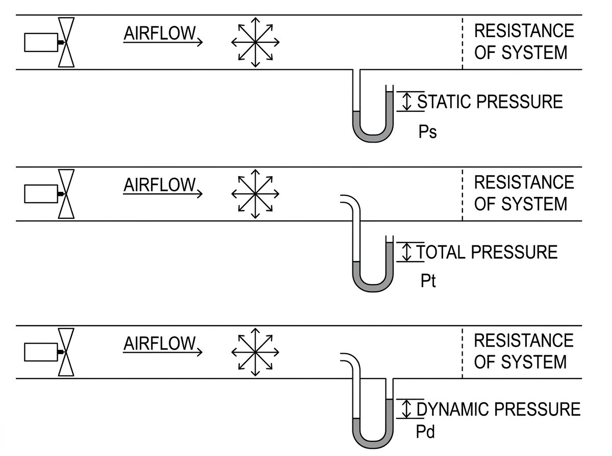
لصحة تطبيق العلاقة \( P + \frac{1}{2}\rho V^2 = \text{constant} \)، يجب استيفاء الشروط الستة الإلزامية:
- Inviscid Flow: مائع عديم اللزوجة (إهمال قوى الاحتكاك والقص الداخلي).
- Steady Flow: سريان مستقر (الخواص لا تتغير مع الزمن عند أي نقطة).
- Along a Streamline: التطبيق على طول خط انسياب واحد.
- Incompressible Flow: مائع غير قابل للانضغاط (كثافة المائع \( \rho \) ثابتة).
- No Shaft Work: لا يوجد شغل ميكانيكي مضاف أو مستخرج (لا توجد مضخة أو توربينة في مسار القياس).
- No Heat Transfer: انعدام التبادل الحراري عبر حدود سريان المائع.
Topic: Pitot-Static Tube Velocity Calculation
(This is an additional application of the lecture’s formula. It was not mentioned in the lecture or provided by the professor. View it only if you would like to see how to apply the formula.)
Step-by-step solution
Relevant formula: \[ P_{tot} = P_s + P_d\ \Rightarrow\ P_d = P_{tot} - P_s \]Substitution and calculation: \[ P_d = 106{,}200 - 101{,}300 = 4{,}900\ \text{Pa} \]
Relevant formula: \[ P_d = \tfrac{1}{2}\rho V^2\ \Rightarrow\ V = \sqrt{\frac{2P_d}{\rho}} \]Substitution and calculation: \[ V = \sqrt{\frac{2 \times 4{,}900}{1.225}} = \sqrt{8{,}000} \approx 89.44\ \text{m/s} \]
Relevant formula: \[ 1\ \text{m/s} = 3.6\ \text{km/h} \]Substitution and calculation: \[ V = 89.44 \times 3.6 \approx 322.0\ \text{km/h} \]
10. جدول المقارنة الشامل وبنك الأسئلة
Comprehensive Transducer Comparison & Interactive Question Bankجدول المقارنة الشامل لجميع أجهزة قياس الضغط
| الجهاز (Device) | المبدأ الفيزيائي | الاستخدام الرئيسي | القيد الأساسي (Limitation) |
|---|---|---|---|
| Barometer | اتزان عمود سائل مع الضغط الجوي | قياس الضغط الجوي المطلق والتنبؤ بالطقس | قياس مرجعي استاتيكي للضغط الجوي فقط |
| Manometer | فرق ارتفاع عمود سائل هيدروستاتيكي | قياس الضغط وفرق الضغط في المعامل والأنابيب | استجابة ديناميكية بطيئة، مدى محدود (أقل من 7 bar) |
| Dead Weight Tester | كتلة معلومة فوق مكبس ذي مساحة دقيقة | معايرة أجهزة وعدادات الضغط كمعيار أولي | للمعايرة الاستاتيكية فقط، يتأثر باحتكاك المكبس |
| Bourdon Tube | انفراج تشوه أنبوب مرن بيضاوي | عدادات قياس الضغط الصناعية المباشرة | للضغط الساكن فقط، يتأثر بالتشوه اللدن فوق حد المرونة |
| Diaphragm | انحناء غشاء مرن رقيق | قياس فروق الضغوط المنخفضة والغازات | إزاحة ميكانيكية صغيرة جداً، حدود مرونة دقيقة |
| Bellows | تمدد وانكماش طيات أسطوانية مرنة | تحويل الضغط إلى إزاحة ميكانيكية كبيرة | قصور ذاتي واستجابة بطيئة، حدود إجهاد ميكانيكي |
| Piezoelectric | توليد شحنة كهربائية في البلورة | الضغوط الديناميكية المتغيرة والصدمات والانفجارات | لا يناسب الضغط الثابت (تسرب الشحنة)، يحتاج مكبر |
| Piezoresistive | تغير المقاومة النوعية لأشباه الموصلات | قياس الضغط الثابت والديناميكي بدقة عالية | يحتاج لقنطرة ويتستون وتعويض للتغيرات الحرارية |
| Parametric (R, L, C) | إزاحة ميكانيكية تغير بارامتر الدائرة | أنظمة المراقبة والتحكم الإلكتروني عن بعد | يعتمد على عنصر ميكانيكي وسيط (مثل المنفاخ أو الغشاء) |
• في الحساسات الجزيئية (Molecular Sensors): الضغط المطبق يؤدي مباشرة إلى تغير خاصية كهربائية داخل مادة الحساس نفسها على المستوى الجزيئي أو البلوري (مثل توليد الشحنة في Piezoelectric أو تغير المقاومة النوعية في Piezoresistive)، وتتميز باستجابة ديناميكية فائقة السرعة لانعدام الأجزاء الميكانيكية المتحركة الكبيرة.
• في الحساسات البارامترية (Parametric Sensors): يؤثر الضغط أولاً على عنصر ميكانيكي مرن (مثل Diaphragm أو Bellows) ليولد إزاحة مادية (Displacement)، وهذه الإزاحة تحرك أجزاء داخل دائرة كهربائية لتغيير بارامتر كهربائي خارجي مثل المقاومة (\( R \)) أو الحث (\( L \)) في محول LVDT أو السعة (\( C \)).
لأن مبدأ عمل الحساس الكهروضغطي يعتمد على توليد شحنة كهربائية لحظية نتيجة الإجهاد الديناميكي المتغير. عند تطبيق ضغط ثابت مستمر، تتولد الشحنة في اللحظة الأولى فقط، ثم تتسرب الشحنات الكهربائية فوراً عبر المقاومة الداخلية العالية للبلورة وأسلاك الدائرة ومكبر الشحنة إلى الأرضي؛ مما يجعل جهد الخرج يهبط إلى الصفر رغم بقاء الضغط ثابتاً. لذلك فهو مخصص حصرياً للضغوط الديناميكية المتغيرة مع الزمن (Dynamic Pressure Only).
(أ) المانومتر المائل (Inclined Manometer): الغرض منه زيادة الحساسية (To increase sensitivity) عند قياس فروق الضغط الصغيرة جداً؛ حيث تتحول القيمة الرأسية الصغيرة \( h \) إلى إزاحة مقروءة طويلة \( L \) على طول الأنبوبة المائلة وفق العلاقة \( L = h / \sin\theta \).
(ب) مانومتر الخزان (Well-Type Manometer): الغرض منه إلغاء الحاجة لقراءة مستويين في ساقي المانومتر؛ بفضل مساحة الخزان العريضة جداً يصبح هبوط السائل فيه مهملاً أو يُعوض في تدريج الأنبوبة، مما يمكن الراصد من أخذ قراءة فرق الارتفاع مباشرة من ساق واحدة وتقليل أخطاء القياس.
العوامل الثلاثة طبقاً للمعادلة \( C = \frac{\varepsilon A}{d} \) هي:
1. مساحة تراكب اللوحين (\( A \)).
2. المسافة الفاصلة بين اللوحين (\( d \)).
3. نوع وثابت العزل للمادة العازلة بينهما (\( \varepsilon \)).
آلية العمل: يمثل الغشاء المرن أحد لوحي المكثف بينما اللوح الآخر ثابت. عند تطبيق الضغط، ينحني الغشاء مقترباً من اللوح الثابت مما يقلل المسافة الفاصلة \( d \)، وبسبب العلاقة العكسية (\( C \propto 1/d \)) تزداد السعة الكهربائية \( C \)، ويتم قياس هذا التغير بدقة بواسطة دائرة قنطرة ترددية.
طبقاً لسلايدات المحاضرة (Slide 17)، القيود هي:
1. Friction between piston and cylinder: احتكاك المكبس بالأسطوانة يقلل من دقة القوة المؤثرة، ويتطلب تدوير المكبس لتخفيف الاحتكاك.
2. Poor dynamic response: جهاز مخصص للمعايرة الاستاتيكية فقط (Static calibrations only) ولا يمكنه قياس التغيرات الزمنية للضغط.
3. Uncertainty in gravitational constant (\( g \)): يتأثر باختلاف قيمة عجلة الجاذبية المحلية من مكان لآخر على سطح الأرض ويحتاج إلى تصحيح موقعي.
الشروط الستة الإلزامية لمعادلة برنولي (Slide 33) هي:
1. Inviscid flow: مائع عديم اللزوجة وخالٍ من الاحتكاك الداخلي.
2. Steady flow: سريان مستقر لا يتغير مع الزمن.
3. Along a streamline: التطبيق على امتداد خط انسياب واحد.
4. Incompressible flow: مائع غير قابل للانضغاط (كثافة ثابتة).
5. No shaft work: عدم وجود شغل شافت (مضخات أو توربينات).
6. No heat transfer: انعدام انتقال الحرارة من أو إلى مجرى السريان.